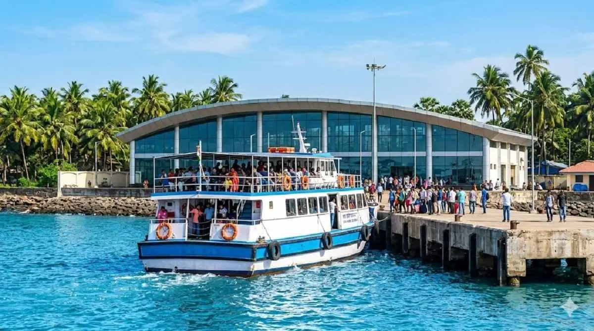

M2M Ro-Ro Ferry: Bhaucha Dhakka to Mandwa
This remains one of the most popular choices for travelers who want a more
comfortable sea route. In 2026, tickets start around Rs 390
for the main deck and about Rs 460 for the AC lounge.
If you are taking a car, budget approximately Rs 1,020+.
For route details and planning context, read our full
Mumbai to Alibaug transport guide.

Speed Boats: Gateway to Mandwa
Private speed boats are the fast option for travelers in a hurry. The crossing
can take about 20 minutes, but fares are usually around
Rs 4,000+ per trip.
This option suits small groups prioritizing time over cost, especially for
short weekend trips from Mumbai.

PNP and Maldar Ferries
PNP and Maldar ferries remain reliable and frequent, with standard tickets
typically ranging from Rs 200 to Rs 285. They are still a
strong value option for budget-conscious travelers.
If you are comparing options for time, cost and comfort, start with
this transport breakdown.